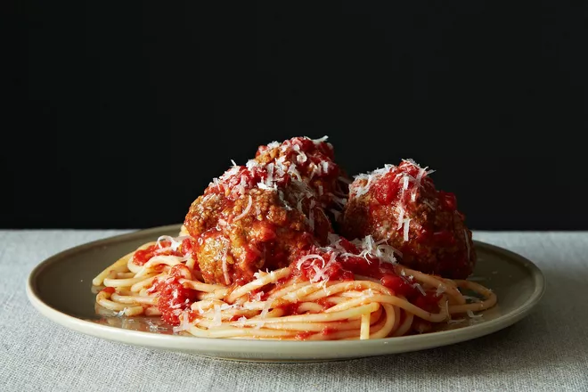

Rao's Meatballs

Author Notes
Spaghetti and meatballs doesn't have to be a meal that you slave over and simmer all day, nor does it need to put
you into hibernation once you've eaten it. You can mix, shape, and fry these meatballs in exactly the time it
takes for Marcella Hazan's tomato, butter, and onion sauce to cook (or even this 20-minute marinara, if you're
really fast). The caveats: 1. Make your own fresh breadcrumbs (i.e., grind up some stale bread) or, if your
crumbs are purchased and quite fine, cut back by half, and don't use quite as much water. I can't be responsible
for your stiff, mealy dumpling-balls if you don't heed this. 2. Use local, pastured, not very lean meats if at
all possible. Good flavor and fat go a long way here.
Ingredients
- 1 pound lean ground beef
- 1/2 pound ground pork
- 1/2 pound ground veal
- 2 large eggs
- 1 cup grated Pecorino Romano
- 1 1/2 tablespoons chopped Italian parsley
- 1/2 small clove garlic, peeled and finely chopped
- Kosher or sea salt
- Freshly ground pepper
- 2 cups fresh breadcrumbs
- 2 cups lukewarm water
- 1 cup good-quality olive oil
- Your favorite marinara sauce
Directions
- In a large bowl, combine the beef, pork, and veal. Add the eggs, cheese, parsley, and garlic; season with
salt and pepper. Using your hands, mix to combine. Add the breadcrumbs and mix again to combine. Slowly add
the water, 1 cup at a time, until the mixture is quite moist. Shape into 2½- to 3-inch balls.
- In a large skillet over medium-high heat, warm the oil. When the oil is very hot but not smoking, fry the
meatballs in batches. When the bottom of the meatball is very brown and slightly crisp, turn and cook the
top half. Remove from the heat and drain on paper towels.
- Lower the cooked meatballs into the simmering marinara sauce and cook for 15 minutes. Serve alone or with
pasta.